西暦4026年、銀河に散った7種の人類。
翻訳はできる。しかし、共感ができない。
そんな世界で、人は再び同じ場に立てるか。
2000年ぶりに全7種の人類が同じ場に立つために、
一軒のカフェを建てようとする若者の旅。
ハバーマスが唱えた公共圏(市民が対等に議論する場)の崩壊。
フィルターバブル、アルゴリズム的極化、共感疲労。
これを2000年後の銀河スケールに拡張し、技術では解けない問題として描く。
現在、哲学(ハバーマス)を先行させるか、舞台と人物から立ち上がるものに委ねるかで迷っている。
公共圏崩壊を核に据え、カフェ再建の構造で通す。主題が明確、批評的射程が深い。ただし教条化リスク。
ハバーマスは背景に退き、2000年後の銀河+7種で自由に遊ぶ。物語のバリエーションが広い。ただし主題が散る。
現状の気分: Bに寄せつつ、結果的にテーマが立ち上がる形を探る。
過去2000年で、情報伝達は10億倍、人口は40倍、移動速度は600倍になった。
同じ幅で次の2000年を伸ばすとき、人類はどこへ辿り着くか。
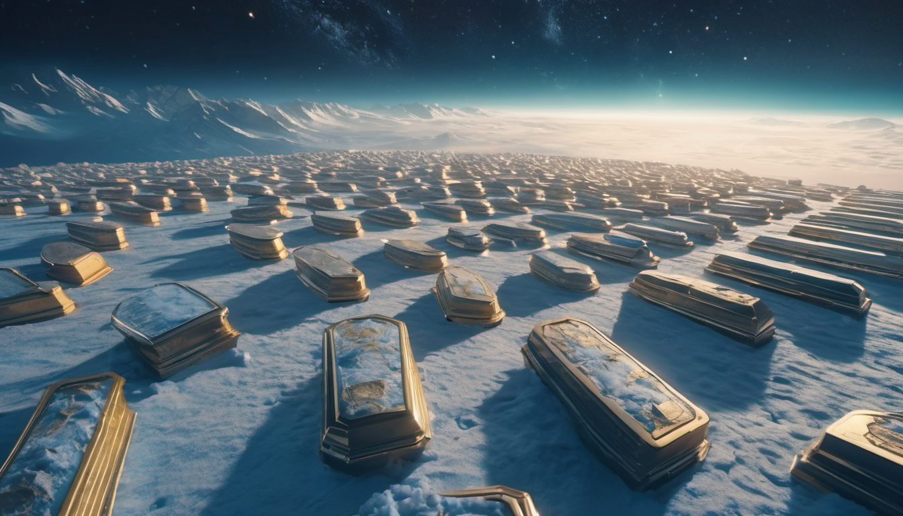
地球残留、寿命200年、肉体保持。古典の保管者。老いと死を「特権」として誇る宗派あり。
海洋型・高重力型・真空適応型など多様化。自分と同じ身体の伴侶を生涯見つけられない者がいる。
肉体を放棄、量子空間に存在。時間を早回した者ほど退屈に殺される。
AIと分離不可、思考100倍速。恋人はAI同士が先に恋に落ち、人間側は後追い。
数百世代で独自進化、人類離れ。光や匂いで考え、詩は匂いで書かれる。
21-23世紀の人類が甦り続ける。生きた古代人。二度目の孤児として生き直す。
2種以上の越境者。どこにも属さず、どこにでも属せる。成人の儀で「どの種を選ぶか」と問われる。
※ 以下はローカルAI(ComfyUI/SDXL)で生成したプレビジュアル。本番では美術監督と再設計する前提。
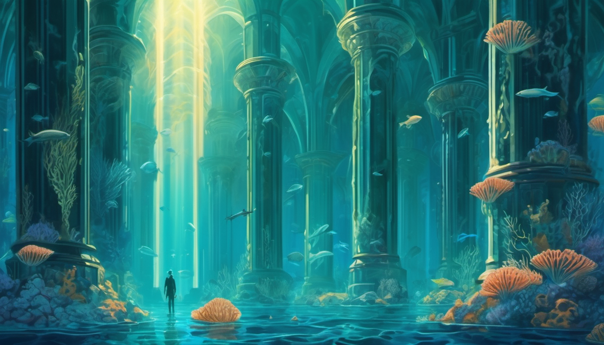
改造人類の王国。バイオルミネッセンスの珊瑚塔、神々しい光条、鰓を持つ住人。
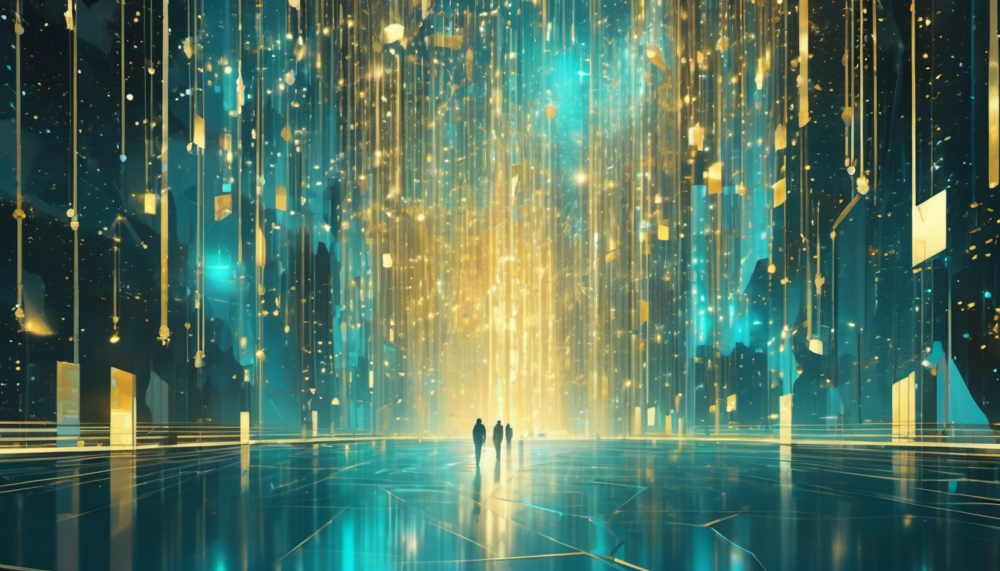
物理空間を持たないUploadedの領域。光とデータの流れる幾何学的虚空。
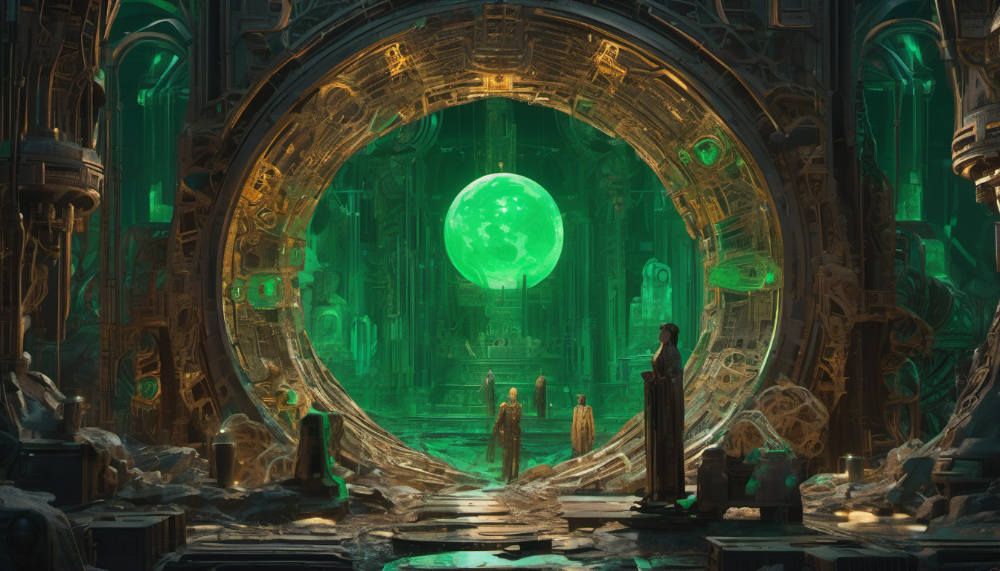
AIと人の融合体を製造する月面の鍛冶場。青銅と翡翠の工房。
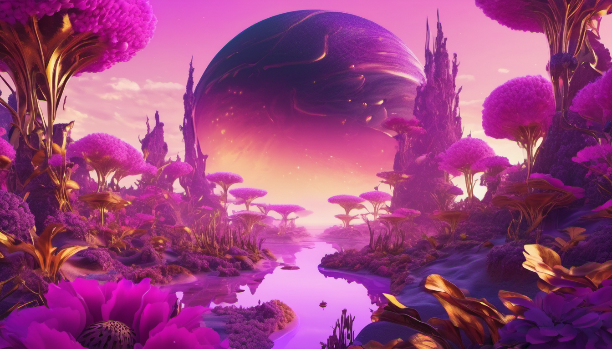
言語を持たない異星適応型の世界。光る花粉が議論のように漂う。
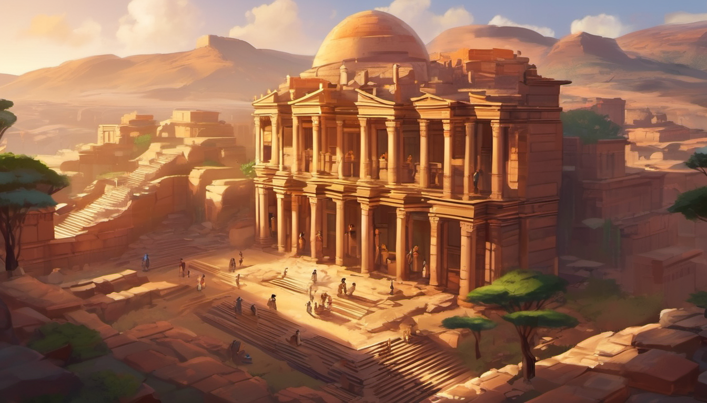
地球。砂岩の棚に積まれた古文書群。人々がまだ紙を読む最後の場所。
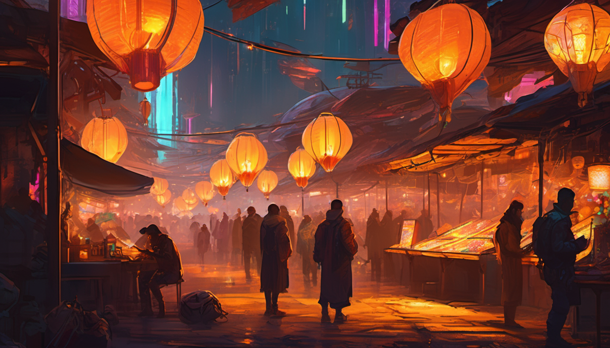
ハイブリッドたちの自治惑星群。違法技術と中立地帯の交差点。
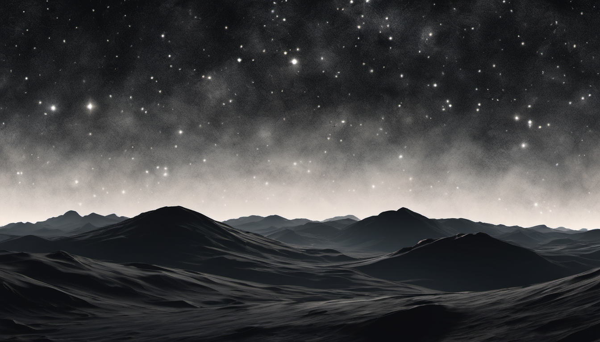
量子通信が届かない銀河の影。行った者は戻らない。地図には代々座標だけが記される。
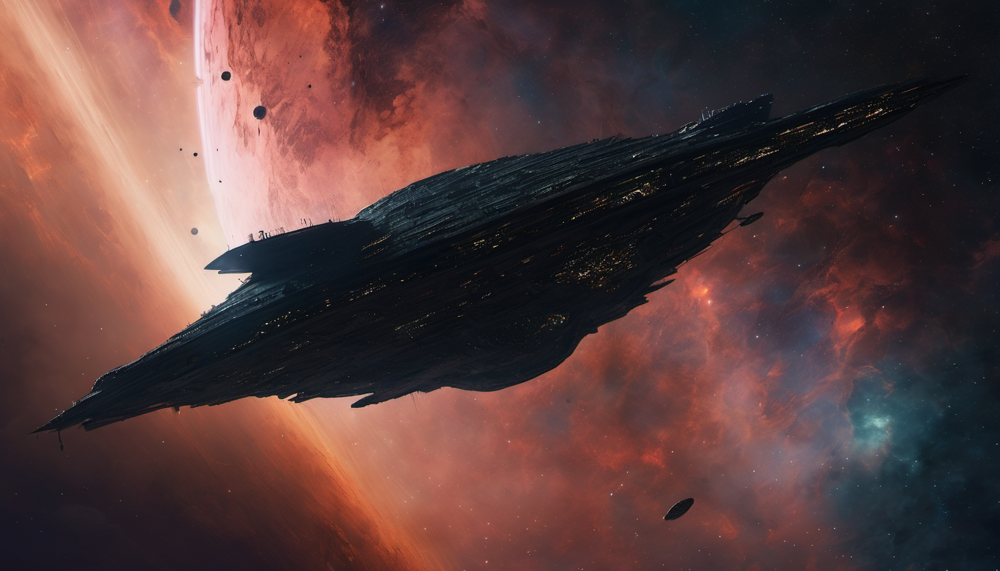
2000年間銀河を周回する巨大船。通信に応じず、攻撃もせず、ただ在る。
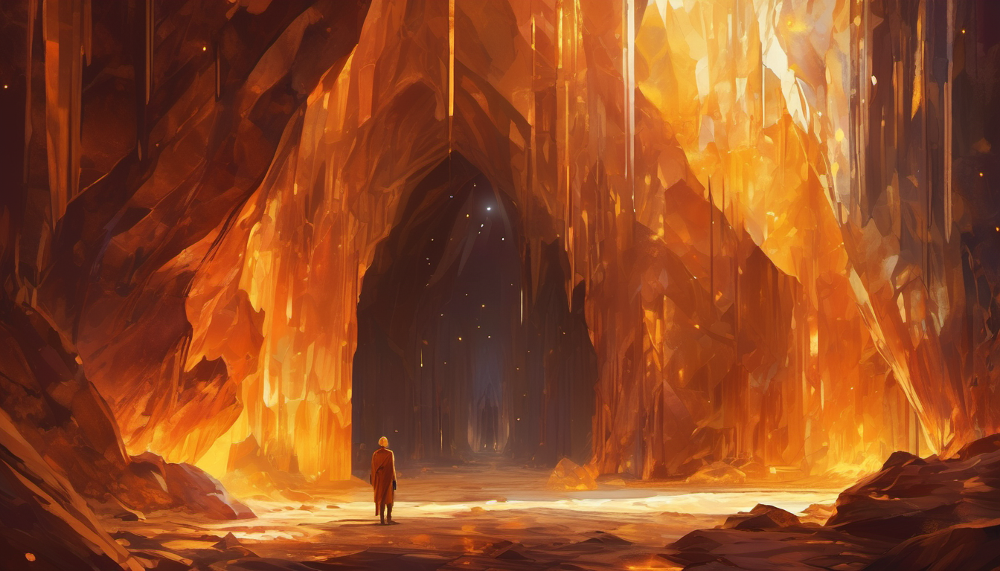
触れると昔誰かが歌った歌が聞こえる結晶洞窟。声紋はどの種にも一致しない。
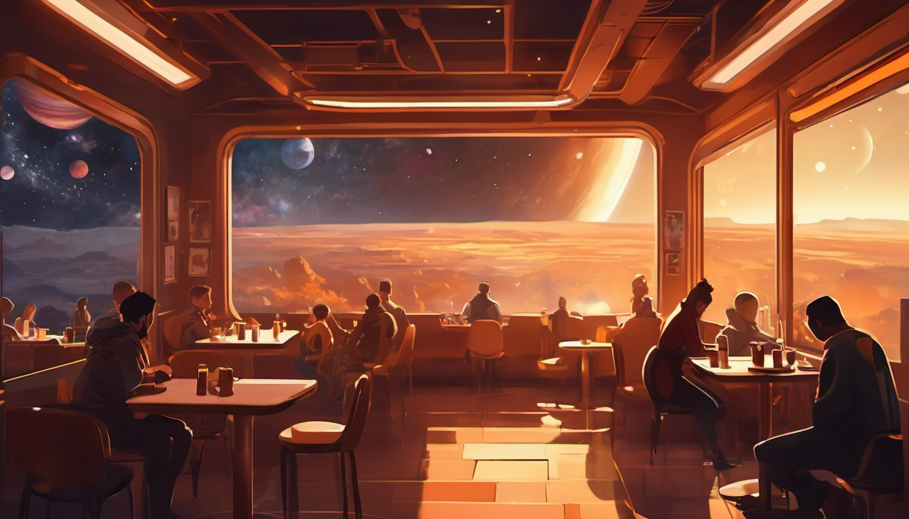
主人公の舞台。宇宙を背景にした小さな店内。7種が同時に居られる唯一の場所になり得るか。
この世界は複数の物語を載せられる。現在は5つの方向性を並べて、どれを(あるいはどう混ぜて)採るかを検討中。
7惑星を巡って「全種が入れる一軒のカフェ」の部品を集める。型1(The Big Short式)の学習痛快構造と相性最良。
Null Zone / 静かな航海者 / 大沈黙のどれかを軸に、謎を追う探偵/宇宙船の物語。ホラー寄りにも触れる。
Revenantsの恋人たちが時代を跨いで再会する話。身体も時代も違う相手をどう愛するか。日常SF寄り。
翻訳者/調停人/葬儀屋/歌の採掘者など、2000年後の職人の日常。一人称の静かなドラマの連作。
Exoforms独立、Liminal公民権、連合議会復活。種を超えた合意形成の政治劇。
DIRECTION A(建設巡礼)を骨格に、B(ミステリー)を通奏低音として通す混合案が有力。
例: 主人公が7惑星を巡る旅のなかで、大沈黙・静かな航海者・死者の声といった謎が徐々に繋がっていく。
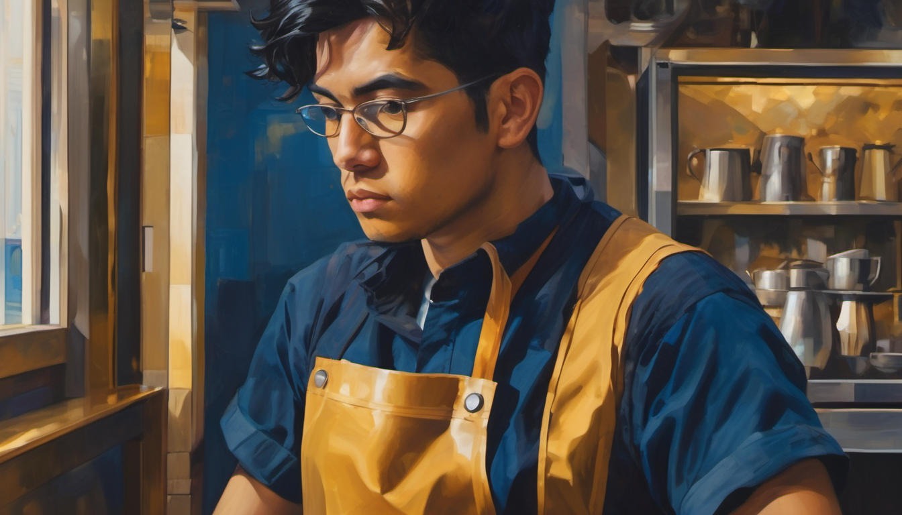
現時点の本命は Liminal(ハイブリッド)の見習いカフェ建築家。
2種以上の人類の特徴を持つ越境者。故郷がなく、全種族から中立扱いされる。
カフェ運営はプロ、建築は未経験、種間翻訳は素養。
視聴者と一緒に学んでいく「半分プロ半分素人」型(Aポジション)。
Liminal(ハイブリッド)であること、見習いの立場、カフェに関わる職業素養。
名前、性別、年齢、どの2種のハイブリッドか、肉体的特徴、動機の具体、家族や恋人の有無、名前を持つか持たないか。
ハバーマス公共圏論を前景に置くか、背景に退かせるか。
現在は「背景に退かせて、世界と人物から主題が立ち上がる」方向に傾いている。
建設巡礼(A)、ミステリー(B)、ロマンス(C)、職人連作(D)、政治劇(E)のうち、どれを骨格にするか。
現在はA+Bの混合が有力。
作品名『THIRD PLACE』からも自然だが、強すぎる求心力は物語を狭めるリスクもある。
カフェを「ゴール」にするか「経由地」にするかも未決。
「もし〇〇だったら?」の形で物語全体を貫く問いが未確定。候補は多数ある(技術で全員繋げるのに、なぜ共感は無理か/不死の世界で何を「生きる」と呼ぶか/他)。
名前・性別・外見・動機・家族背景など、全て未決(上記 07 参照)。
誰が/何が主人公を阻むか未定。「種族間の対立」「連合議会の老害」「カフェ建設を邪魔する勢力」「技術的障害」「主人公自身の内面」など候補多数。
90-120分の長編映画か、連作シリーズ(7話=7惑星)か。予算とテンポが大きく変わる。
現在のプレビジュアルは「ダーク+ゴールド+ペインタリー」方向。他に「クリア+淡彩」「グラフィック寄り」「リアル質感+薄い彩度」等の可能性あり。
世界はもう立ち上がっている。
ここから、この中を生きる人物と物語を探す。